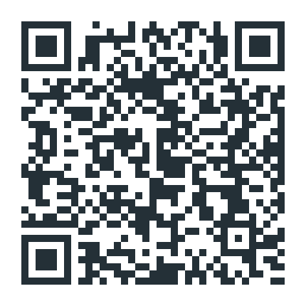

Rotary XL Kiosk
Installs the Rotary XL touch kiosk on a Linux PC and opens it full screen. It starts on its own after every reboot.
1 · Run this in a terminal
Open a terminal with Ctrl+Alt+T, paste the line below, press Enter and type your password when asked.
curl -fsSL https://kspatel45.github.io/rotary-xl-kiosk/install.sh | bash
2 · Or scan a QR code

USB barcode scanner
Open a terminal, click in it, and scan. The scanner types the install command. Press Enter if your scanner doesn't add it.
Phone
Opens this page, so you can read or send the command to the PC.
What the installer does
- Downloads the kiosk to
~/rotary-kiosk. Running it again updates the kiosk and keeps your products and settings. - Installs Node.js and Chromium if they're missing.
- Gives the user access to the serial ports (Arduino Mega and USB-CAN adapter).
- Sets the screen to portrait. Change this in
~/rotary-kiosk/linux/kiosk.conf. - Opens the kiosk full screen now and at every login. Press Alt+F4 to exit.
Works on Lubuntu 22.04 / 24.04, and on Ubuntu, Debian and Mint with an X11 desktop. After installing, open Admin with the gear at the bottom-left of the screen, choose the serial ports and change the admin password.